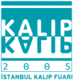

|
01
- 04 Aralýk 2005 > TIME 3. Uluslararasý Üretim Teknolojileri
Fuarý:
Yer:
CNR EXPO Ýstanbul
Ziyaret saatleri: 10:00 - 19:00
Fuardaki
bazý ürün gruplarý:
- CAD/CAM
Sistemleri, Yazýlýmlar
- Tasarým
Mühendisliði, CNC
Takým Tezgahlarý, Takýmlama
- Otomasyon,
Hidrolik-Pnömatik Sistemler
- Metal
Kalýp Döküm Ürün ve Teknolojileri, Soðuk
Þekillendirme ve Döküm Kalýplarý
- Yüzey
Ýþlem, Boyama Mak. Ekipmanlarý, Kaynak
Makine ve Ekipmanlarý
- Sektörel
Dergiler
Daha
fazla bilgi için: www.itf-time.com
TurkCADCAM.net Standý:
Fuar
Süresince Hall 2 B22'de bulunan TurkCADCAM.net Standýna yoðun
ilgi gösterildi.
Üyelerimiz birbirleriyle tanýþma ve sohbet etme fýrsatý buldu.
Daha
fazla resim ve bilgi için týklayýnýz
30
Eylül - 02 Ekim 2005 > KALIP 2005 Ýstanbul Kalýp Fuarý:
Yer: Dünya Ticaret Merkezi Yeni Fuar Alaný, Ýstanbul
Ziyaret saatleri: 11:00-19:00
Ýlk gün (Cuma) açýlýþ programý:
- 11:45-12:00
Kayýt ve Hoþ geldin
-
12:00-12:30 Açýlýþ Konuþmalarý ve kurdele kesimi
-
Yavuz Özgün, Ýhlas Holding Yönetim Kurulu Baþkan Yrd.
- Harun
Masatoðlu , UKUB (Uluslararasý Kalýp Üreticileri Birliði)
Baþkaný
- Murat
Yalçýntaþ , ÝTO (Ýstanbul Ticaret Odasý) Baþkaný
Katýlýmcý
Ürün Gruplarý:
-
Kesme Kalýplar, Friksiyon Kalýplar, Pres Kalýplar, Metal
Enjeksiyon Kalýplarý, Termoform Kalýplar, Sývama Kalýplar,
Plastik Kalýplar, Þiþirme Kalýplar, Model Kalýplar, Kauçuk
Enjeksiyon Kalýplar, EPS Kalýplar, Sac Metal Kalýplar, Döküm
Kalýplar, Dövme Kalýplar, Kalýp Parlatýcýlarý, Mühendislik-Danýþmanlýk...
- Kalýp
imalatýnda kullanýlan tüm Makineler, Tezgahlar, Kimyasallar,
Hammaddeler, Bilgisayar ve Programlarý, Baðlantý Elemanlarý,
Takým Tutucular, Sistemler, Elemanlar ve Malzemeler...
|
KALIP
2005 Ýstanbul Kalýp Fuarý
KONFERANS
Programý:
- 30
EYLÜL
2005 CUMA - ÝDTM TOPKAPI KONFERANS SALONU:
- 15:00-16:00
Artur DARACHENBERG, SEM GRUP, 3 BOYUTLU
LAZER TARAYICILARI VE UYGULAMALARI
- 16:00-17:00
Erkut NEÐÝÞ, SÝNERJÝ DANIÞMANLIK, HIZLI
KALIP ÝMALATI UYGULAMALARINDA OTOÝNÞA
TEKNOLOJÝLERÝ
- 01
EKÝM
2005 CUMARTESÝ - ÝDTM DOLMABAHÇE KONFERANS
SALONU
- 13:00-14:00
Hakan KOÇAK - Belgin MERT, SAÐLAM METAL,
DEÐÝÞEN ÝHTÝYAÇLARI KARÞILAYAN YENÝ TEKNOLOJÝ
MALZEMELER
- 14:00-15:00
Öner ÖZYILMAZ, ÝNFOMA GROUP, ÜRETÝMDE ÝLERÝ
KALIP TEKNÝKLERÝ
- 15:00-16:00
Artur DRACHENBERG, SEM GRUP, 3 BOYUTLU
LAZER TARAYICILARI VE UYGULAMALARI
- 16:00-17:00
Zafer AKGÜN, TAEGU TEC A.Þ., KALIPÇILIKTA
EN SON YENÝLÝK -BULL CUTTER- BIG DAIS HOWA-BIG
PLUS
- 01
EKÝM 2005 CUMARTESÝ - ÝDTM TOPKAPI KONFERANS
SALONU
- 13:00-13:45
Kaan DÝKÝCÝ/ Erhan KOSOVA, NCG Numerik Kontrol
Grup Ltd. Þti., 5 EKSEN HIGH SPEED CNC ÝÞLEME
MERKEZLERÝ ve CAD CAM UYGULAMALARI
- 14:00-14:45
Prof.Dr. Bilgin KAFTANOÐLU ODTÜ MAKÝNA MÜH.
BÖL., KALIP TASARIM VE ÝMALATINDA ODTÜ
- 15:00-15:45
Harun MASATOÐLU, UKUB Uluslararasý Kalýp Üreticileri
Birliði, UKUB'UN DÜNÜ, BUGÜNÜ, YARINI
- 16:00-16:45
ISTAÞ, TAKIM VE KALIP ÇELÝKLERÝNÝN ISIL
ÝÞLEMÝ
- 17:00-17:45
Yrd.Doç.Dr. Murat YAZICI, ULUDAÐ ÜNÝV.,
DÜNYA'DA ve TÜRKÝYE'DE KALIPÇILIK EÐÝTÝMÝ
PANEL
Programý:
- 02
EKÝM 2005 PAZAR, 14:00-16:30, -
ÝDTM TOPKAPI KONFERANS SALONU
- OTURUM
BAÞKANI:
- Prof.Dr.Bilgin
KAFTANOÐLU,
ÖÐRETÝM ÜYESÝ, ODTÜ Makina Müh. Böl.,
- KONUÞMACILAR:
- Harun
MASATOÐLU, UKUB YÖNETÝM KURULU BAÞKANI
-
Erkan POLAT,
TOFAÞ KALIP GRUP MÜDÜRÜ
- Avni
TARAKÇIOÐLU,
Y.K.B. GÜVENAL A.Þ.
|
Daha
fazla bilgi için:
Bu
Fuar'ýn ardýndan portalýmýzda yayýnlanan ilgili haber ve fotoðraflar
için týklayýnýz
KALIP-2005.doc
(56KB MS Word dosyasý): Detaylý bilgi, stand fiyatlarý,
sektör bazýnda ziyaretçi listesi...
www.ihlasfuar.com/kalipdetay.htm
Ýhlas
Fuar Hizmetleri A.Þ.
Tel: (212) 454 25 03
www.ihlasfuar.com
E-Posta: info@ihlasfuar.com
|
Not:
Bu fuarda TurkCADCAM.net standý da bulunacaktýr!
Stand No: E-102
4
yýldan uzun bir süredir birbirlerini sanal ortamda tanýyan
ve fikir alýþveriþinde bulunan TurkCADCAM
e-posta grubu üyeleri standýmýzda bir araya gelerek
tanýþma fýrsatý bulabileceklerdir.
|
29
Eylül - 02 Ekim 2005 > ANKATEK' 2005 3. Ankara Makine Ýmalatý
ve Metal Ýþleme Teknolojileri Fuarý:
Yer: Altýnpark Expo-Center, Ankara
Ziyaret saatleri: 11:00 - 19:00
Fuar
kapasmý:
Erozyon makineleri, Tasarým ve Ýmalat, Bilgisayar Destekli
Tasarým ve Ýmalat (CAD/CAM Bilgisayarla Bütünleþik Ýmalat
(CIM ), Esnek Ýmalat Sistemleri (FMS) Malzeme Teknolojisi,
Metal Ýþleme ve Þekil Verme Sistemleri, Üretim Teknolojileri,
Döküm ve Kaynak, Makine Elemanlarý, Baðlantý Elemanlarý, El
Aletleri, Takým Tezgahlarý ve Ekipmanlarý, NC ve CNC Tezgahlarý...
Destekleyen
Kuruluþlar: ATO, OSTÝM, ANFA, EMO Makine Market Dergisi
Daha
fazla bilgi için: www.emomakinemarket.com/ankatek.asp
13
- 20 Eylül 2005 > Ýstanbul Design Week (IDW) / ADesign
Fair 2005:
Yer: Galata Köprüsü / Ýstanbul
ADesign
Fair - Ýstanbul Uluslararasý tasarým buluþmasý 2003'te "Tasarým
Ýktidara" sloganýyla Lütfi Kýrdar'da, 2004'te "From Turkish
Delight to Turkish Design" sloganýyla Hilton Convention Center,
Akeri Müze'de fuar; Beyoðlu ve Sultanahmet'de kenti ve kültürü
baz alan tasarým etkinlikleriyle gerçekleþtirildi.
ADesign
Fair'in önceki senelerde sokaða ve dolayýsýyla kente açýlýmýyla
geniþleyen vizyonu, bu yýl "Fuar" formatýndan farklýlaþýp,
Ýstanbul Design Week (IDW) adý altýnda daha kapsamlý bir
platforma taþýnacaktýr.
Ýstanbul
Design Week 2005 Etkinlik Programý:
- 13
Eylül 19:00 Ýstanbul Design Week Açýlýþ
- 14-18
Eylül 10:00-21:00 Fuar Ziyareti
- 18
Eylül 10:00-20:00 Fuar Ziyareti
- 12:00-17:00
"Halk Günü" Ücretsiz Giriþ
- 20:00
Fuar Kapanýþ
- 14-20
Eylül Ýstanbul Etkinlikleri (Konferans, Panel, Seminer,
Sergiler, Söyleþiler)
Paneller'den
seçmeler:
- 17
Eylül 15:00 > Tasarým Çin'e Karþý Ýlaç mý?
-
Salon 2
Renan Gökyay
Alphan Manas
Burhan Özkan
Moderatör: Sertaç Ersayýn
- 17
Eylül 16:00 > Hiber Teknolojiler, Geleceðin Enerjisi,
Otomotiv Tasarýmý - Salon 1
Jan Nahum
Nuri Çolakoðlu
- 20
Eylül 14:00 > Teknoloji Tasarýmý Uçuruyor! - Salon
1
Zafer Uluçay, Cadem A.Þ.
Murat Armaðan, T-design
Moderatör: Þahin Tulga, HP
Not:
Tüm panel programý için: http://www.istdesignweek.com/paneller.asp
Graduation
Show:
Sergiye, Türkiye genelindeki 6 üniversitenin (ÝTÜ, Marmara
Üniversitesi, ODTÜ, Yeditepe Üniversitesi, YTÜ, Anadolu Üniversitesi)
tasarým bölümünü birincilik, ikincilik ve üçüncülükle bitiren
öðrenciler katýlmaya hak kazanacak. Sergide öðrencilerin mezuniyet
projeleri, prototip ve maketleriyle birlikte yer alacak.
Not: Tüm panel programý için: http://www.istdesignweek.com/sergiler.asp
Daha
Fazla bilgi için:
02
- 05 Haziran 2005 > SUBCONIST 2005 4. Uluslararasý
Yan Sanayi Ürünleri Fuarý:
Yer: CNR Fuar Merkezi, Yeþilköy / Ýstanbul
Türkiye'nin
ilk ve tek endüstriyel genel yan sanayi fuarý olan Subconist,
kýtalarýn buluþtuðu Ýstanbul gibi önemli bir ticaret noktasýnda
düzenleniyor. Fuar, yan sanayi firmalarýnýn uluslararasý ana
sanayi kuruluþlarý ile buluþacaklarý tek organizasyon olma
özelliði verimli pek çok anlaþmaya ev sahipliði yapacak. Subconist
2005, dünya üreticisi olmak ve uluslararasý piyasalarda pazar
payýný artýrmak isteyen tüm fuar katýlýmcýlarý için önemli
bir adým oluþturuyor.
Katýlýmcý
firmalarýn bazý faaliyet konularý þunlardýr:
- Döküm
ürünler
- Talaþsýz
þekil verme
- Talaþlý
þekil verme
- Isýl
iþlemler
- Mekanik
ürünler
- Yüzey
iþlemler
- Kalýplar
- Plastik
ve kauçuk ürünler
- Makine
aksam ve parçalarý
- Metal
iþlem makineleri
- Enjeksiyon
makineleri
- Hidrolik,
pnömatik sistemleri
- Presler
- Otomasyon
- Kesici
takýmlar
Daha
fazla bilgi için: www.subconist.com
Medya Fors Fuarcýlýk A.Þ.
Tel : (212) 465 65 45
www.mediaforceonline.com
02
- 05 Haziran 2005 > Bursa Metal Ýþleme Teknolojileri Fuarý:
Yer: Tüyap Uluslararasý Fuar ve Kongre Merkezi, Bursa
Ziyaret
Saatleri:
02 - 04 Haziran 2005 (11:00-20:00)
05 Haziran 2005 (11:00-19:00)
Fuar
kapsamýna giren bazý ürünler:
Talaþlý Ýmalat Makineleri (NC, CNC, Takým Tezgahlarý), Kesici
ve Tutucu Takýmlar, Elektroerozyon Tezgahlarý, Hidrolik Pnömatik
Sistemleri, Kalýplar ve Ýþleme Sistemleri, Kaynak Makineleri
ve Yedek Parçalarý, Kesme Ekipmanlarý ve Yedek Parçalarý,
Kesme Yaðlarý ve Sývýlarý, Endüstriyel Otomasyon Sistemleri,
CAD/CAM Sistemleri ve Yazýlýmlarý...
Daha
fazla bilgi için: www.tuyap.com/2005f_detay/bursa_metalisleme2005.php
05
- 08 Mayýs 2005 > 3T 2005 4. Ýzmir Uluslararasý Metal Ýþleme,
Kalýp ve Otomasyon Teknolojileri Fuarý:
Yer: Kültürpark / Ýzmir
Kapsam:
METAL ÝÞLEME: Talaþlý Ýmalat, Sac Ýþleme ve Yüzey Ýþleme Makineleri,
Kesici ve Tutucu Takýmlar,
ENDÜSTRÝYEL OTOMASYON: Robotik Sistemler, ...
KALIP: CAD/CAM Sistemleri, Sac Kalýplarý, Plastik Enjeksiyon
Kalýplarý, Metal Enjeksiyon Kalýplarý, Vakum Kalýplarý, Dövme
Kalýplarý, Döküm Kalýplarý, Kauçuk / Lastik Kalýplarý, Termoplastik
Kalýplar, Hassas Kesme, standart Kalýp Elemanlarý, Kalýp Çelikleri,
Kalýp Malzemeleri
Daha fazla bilgi için: www.3tfuari.com
31
Mart - 03 Nisan 2005> KONTEK' 2005 8. Uluslararasý
Konya Makine Ýmalatý, Takým Tezgahlarý ve Otomasyon Teknolojileri
Fuarý:
Yer: Konya
Fuar
kapasmý:
...
Erozyon makineleri, Tasarým ve Ýmalat, Bilgisayar Destekli
Tasarým ve Ýmalat (CAD/CAM Bilgisayarla Bütünleþik Ýmalat
(CIM ), Esnek Ýmalat Sistemleri (FMS) Malzeme Teknolojisi,
Metal Ýþleme ve Þekil Verme Sistemleri, Üretim Teknolojileri,
Döküm ve Kaynak, Makine Elemanlarý, Baðlantý Elemanlarý, El
Aletleri, Takým Tezgahlarý ve Ekipmanlarý, NC ve CNC Tezgahlarý...
Daha
fazla bilgi için: www.emomakinemarket.com/kontek.asp
17
- 20 Mart 2005 >
WIN '05 (World of Industry) Fuarý:
Yer: TÜYAP, Beylikdüzü Ýstanbul
Ziyaret saatleri:
Perþembe - Cumartesi: 10:30 - 19:30
Pazar: 10:30 - 18:00
Türkiye ve Avrasya Bölgesi'nin 7 lider uzmanlýk fuarýný tek
çatý altýnda bir araya getiren, 2004 yýlýnda 664 katýlýmcý
ve 78.000 ziyaretçi aðýrlayan WIN - World of Industry Fuarý,
2005 yýlýnda da imalat endüstrisinin buluþma noktasý olmayý
hedeflemektedir. Otomasyon, Electrotech, Machinery, Welding,
Materials Handling, Chemistry ve Hydraulic&Pneumatic fuarlarýndan
oluþan World of Industry, fuara paralel düzenlenen Endüstriyel
Etkinlikler Haftasý ile sadece sergi alaný olmaktan çýkýp
sektörlerin nabzýný tutan profesyonel bir platform iþlevini
görüyor...
Bazý
önemli etkinikler aþaðýda listelenmiþtir:
Konferanslar
- 17
Mart Perþembe
- 14:00-14:50
Ürün Yaþam Çevrimi Yönetimi, Süleyman Müftüoðlu
- 17:00-17:50
CNC Tezgahlarda Yüksek Hýzda Ýþleme, Bülent Kalaycýoðlu
- 18
Mart Cuma
- 13:00-13:50
Silikon Kauçuklarýn Özellikleri ve Teknolojik Yenilikler,
Metin Savaþkan
- 13:00-13:50
Mekatronik Sistemler, Koray Tunçalp
- 14:00-14:50
Hareket Kontrol Sistemlerinde Yeni Teknolojiler, Zeki
Aydan
- 15:00-15:50
Pnömatik Sistemler, Mehmet Caner
- 16:00-16:50
Makine Arýzalarýnýn Tanýmlanmasýnda Titreþim Analizi;
Ýþin Püf Noktalarý, Ýbrahim Çaðlayan
- 19
Mart Cumartesi
- 11:00-11:50
Çevre Bilinci ve Ürün Geri Dönüþüm Uygulamalarý, Elif
Kongar
- 12:00-12:50
Yalýn Üretim, Bülent Durmuþoðlu
- 12:00-12:50
Lineer Motorlar ve Endüstrideki Uygulamalarý, Temel
Karamehmetoðlu
- 13:00-13:50
Innovation; How to Achieve Product Leadership, George
Plasberg
- 14:00-14:50
Sac Ýþleme Teknolojileri, Numan Akyýldýz
- 15:00-15:50
Tersine Mühendislik, Türkay Dereli
- 15:00-15:50
Makinelerde Eksenel Ayarsýzlýk; Sorunlar ve Çözümleri,
Ýbrahim Çaðlayan
- 16:00-16:50
CAD/CAM Sistemlerinde Son Geliþmeler, Ýlker Uludað
Paneller
- 18
Mart Cuma
- 14:00-16:00
Rekabet Gücü ve Endüstriyel Tasarým. Organizasyon: ETMK
Oturum Baþkaný: Prof. Dr. Alpay Er
- 19
Mart Cumartesi
- 14:00-16:00
Ýmalat Yönetiminde Sorunlar ve Çözüm Yollarý
Abdullah Akkuþ, Adil Baykasoðlu, Bülent Durmuþoðlu,
Güngör Avuncan, Nuri Oktay, Türkay Dereli
Daha
fazla bilgi için: www.win-fair.com
|